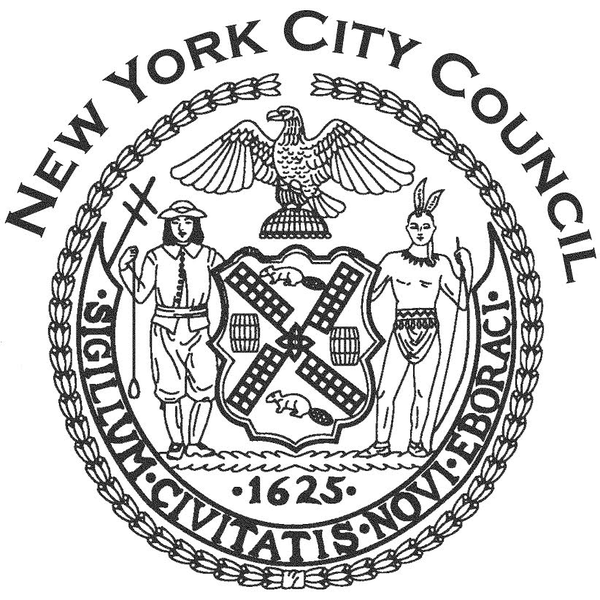
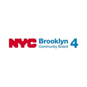
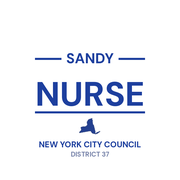
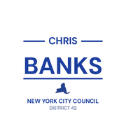

The district

City Council State Senate
State Senate Congress
Congress Subway
Subway Citi Bike
Citi Bike NYC Ferry
NYC FerryTurn layers on and off. Tap an official's logo or a board's seal for its page. Zoning and land use lot by lot are on the land use map.
About
Assembly Member Erik M. Dilan represents State Assembly District 54. It sits in Brooklyn.
The district overlaps community boards Brooklyn 4 and Brooklyn 5.
It is policed by the 75th and 83rd Precincts.
It overlaps council districts 37 and 42 and Senate districts 18 and 19.
Members of the State Assembly serve two year terms.
Next on the ballot in November 2026. Find your poll site and sample ballot there, or see what is coming up on the calendar.
Assembly District 54 in numbers
U.S. Census Bureau, American Community Survey 2019-2023 5-year estimates.
Bills
Committees
Contact
Overlap
Community boards


Bars show how many of the district's election districts fall in each board.
Overlapping elected officials




| Brooklyn CB 5 | 67% of the assembly district | 35% of it |
| Brooklyn CB 4 | 32% of the assembly district | 46% of it |
| 75 Precinct | 67% of the assembly district | 30% of it |
| 83 Precinct | 32% of the assembly district | 46% of it |
| Sector 75A | 47% of the assembly district | 96% of it |
| Sector 83A | 25% of the assembly district | 100% of it |
| Sector 75C | 11% of the assembly district | 26% of it |
| Sector 75B | 10% of the assembly district | 29% of it |
| Sector 83B | 8% of the assembly district | 50% of it |
| School District 19 | 74% of the assembly district | 30% of it |
| School District 32 | 24% of the assembly district | 38% of it |
| School District 23 | 2% of the assembly district | 3% of it |
| Council District 37 | 89% of the assembly district | 72% of it |
| Council District 42 | 11% of the assembly district | 4% of it |
| Senate District 18 | 69% of the assembly district | 27% of it |
| Senate District 19 | 29% of the assembly district | 6% of it |
| Senate District 25 | 2% of the assembly district | 1% of it |